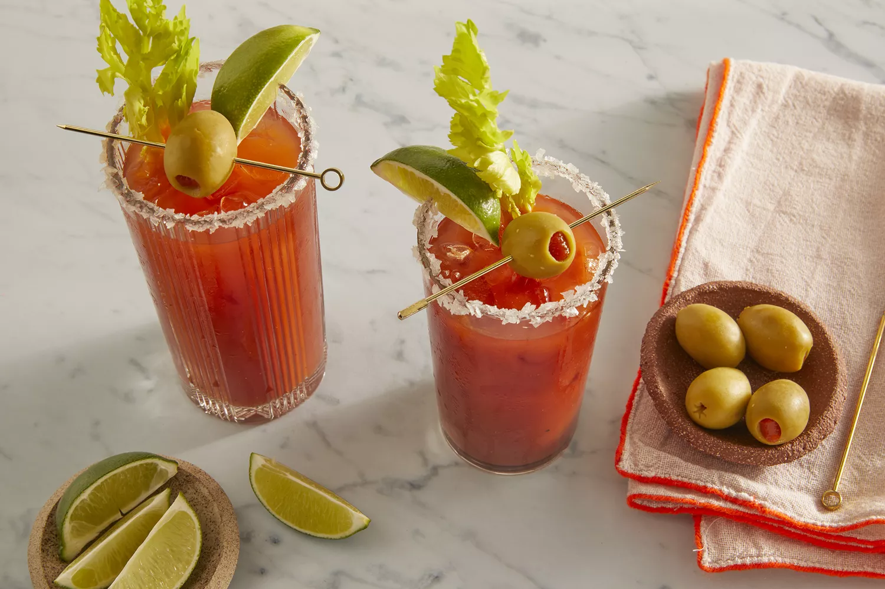

A Bloody Mary is easy to make from scratch with vodka, tomato juice, and a few other simple ingredients. The spicy, salty, and savory taste of this classic cocktail makes it perfect for brunch or other afternoon gatherings.
Since there are no carbonated ingredients, you can make the entire Bloody Mary in one go in a cocktail shaker. To make this easy cocktail, simply shake all ingredients together in a cocktail shaker. Strain into a glass with ice and garnish. Cheers!